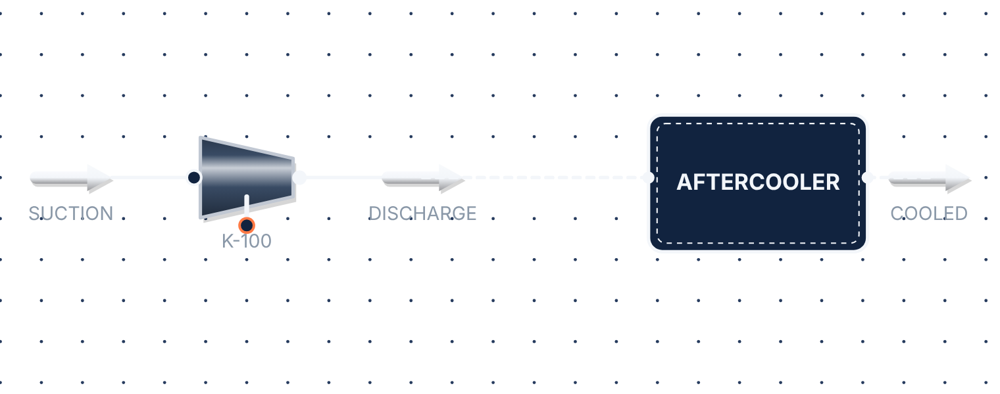
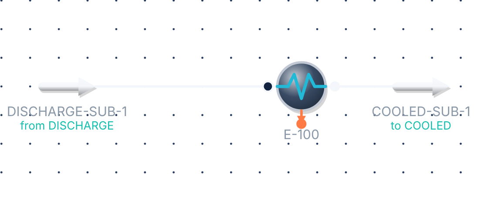

Flowstead
PROCESS ENGINEERING WORKBENCH
Sub-flowsheets, as in HYSYS.
Put part of your plant in a block, open it, and work on a flowsheet of its own. The case still solves as one.
Main flowsheet

Main›AFTERCOOLERinside the block

Its own fluid package, or the parent's
Drag units in, by mouse or finger
Streams in and out, matched for you
Duplicate a whole block in one tap